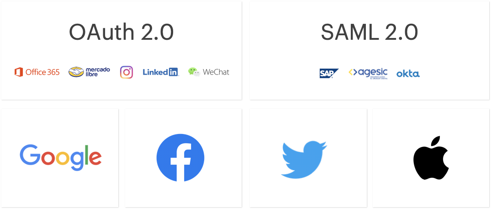
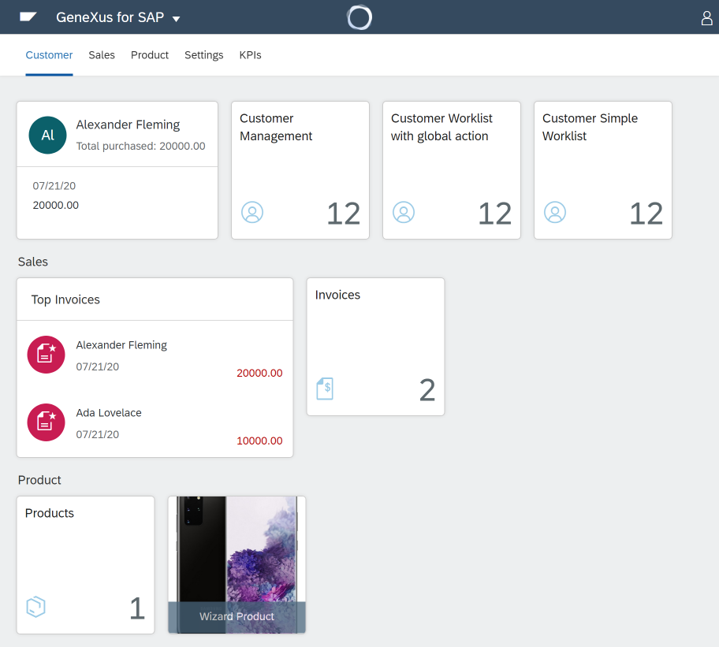

This is the era of the API economy, where business ecosystems are created based on the integration of services and digital products. Sytems need to connect, interoperate, evolve, multiply based on business needs, and this is not the exception, it's the rule. Creating and evolving those integrations that are continually changing is hard and takes time.
GeneXus 17 reduces the effort and the time and cost to integrate interoperating systems that evolve fast.
The key is modeling: Modeling APIs and an API mediation layer, modeling Business Processes, modeling for specific ecosystems and modeling Security globally and for every touchpoint with humans and systems.
APIs are everywhere. When you need to be able to develop and expose APIs of your system, you need to maintain compatibility and you need to evolve those APIs, and these are two opposing forces.
To help you with this, GeneXus 17 introduces the API object which lets you model APIs and API mediation layers. Using this object, you declare its services and their interface, you declare its security level, you declare the implementation of each service, and as part of the mediation layer, you program data transformations required between interface and implementation.
Furthermore, through API objects, now you can easily know what APIs your Knowledge Base is exposing, a task that was not easy to do in previous versions.
So, by getting your knowledge modeled and formalized, you get higher productivity and flexibility to create and evolve your APIs.
Having used the GeneXus BPM Suite in the CoronavirusUy project was key to get the required speed and agility that this project demanded. Modeling the workflow, changing it when the understanding of Covid-19 evolved and changes to the workflow or new flows were required, was what allowed that speed and flexibility.
This mission-critical project was, as one of many others run by GeneXus clients all over the world, proof of the power of the GeneXus BPM Suite. These projects also provided feedback on the latest improvements and were also input for others.
GeneXus 17 adds improvements in performance and scalability, improvements to the modeling of processes that start based on timers, and .NET Core support, among others.
An overview of all these can be found at GeneXus 17 BPM Suite Release Notes.
Security
Systems gained enormous complexity (layers, internal and external APIs) and so many touchpoints (multi-experience).
To proactively manage the complexity from a security point of view, GeneXus 17 adds flexibility to GeneXus Access Manager (GAM), adds new modules with functionalities related to cryptography, and updates the generated code and third-party libraries.
Now your applications can authenticate users through any SAML 2.0 identity provider. This is a feature of GAM, so this configuration can be done at runtime. More information at GAM SAML 2.0 Authentication type.

Every app on the App Store that handles authentication with third-party Identity Providers (Facebook, Twitter, Google, etc) must (as required by Apple) also support authentication through Apple ID. GeneXus 17 adds GAM Apple Authentication type.
In China, WeChat is used everywhere and everyone has a WeChat ID. GeneXus 17 adds GAM WeChat Authentication type.
Taking advantage of the mobile device's capabilities, users can authenticate to your apps by biometry. You can configure this using the Enable Biometrics property when you use GAM.
New and more complex scenarios are supported to allow more secure communication and integration among systems. Single Sign-on for Rest Services using GAM has been added.
Also, GeneXus 17 adds Security Token Service Client Authorization using GAM to centralize authentication and authorization of several applications.
GeneXus 17 adds a set of modules that implement common functionalities associated with cryptography, digital signing, among others. More information at GeneXus Security API.
GeneXus 17 improves the integration with AI providers allowing the use of both, the power of the cloud, and the power of the Devices. It adds support for new providers and also new methods to support custom models, specifically image classification.
Training and predicting on custom models is now possible, specifically for the task of image classification. More information at HowTo: Build a custom model for GeneXusAI
Also, now Videos can be analyzed and processed.
Furthermore, the new cloud providers are Amazon Web Services, Google Cloud AI, Alibaba AI, Baidu AI, and Tencent AI. At GeneXusAI Overview is a complete chart of supported providers and functionalities.
As the device's power is increasing, and the data that the devices collect is enormous, also the need for processing, analyzing, and filtering data on the device (on the edge) is increasing.
Therefore, GeneXus 17 adds support for Firebase MLKit in Android. More information at GeneXusAI Overview.
A complete list of all the improvements since GeneXus 16 can be found here: GeneXusAI: Release notes
This is one of the ecosystems to which GeneXus 17 facilitates the best integration.
Since GeneXus 16 there exists a special edition of GeneXus, and also a specific pack that you can add to GeneXus that first offered integration with the ERP and also allows you to take advantage of other technologies offered by SAP.
As our clients have been adopting this tool and developing solutions around SAP, as well as due to our closeness as SAP company partners, the suite has been improved and new technologies offered by the provider have been added, too.
In this sense, the Fiori 3.0 design guides have been incorporated, thus having patterns for both Design Systems, Fiori 3.0, and Fiori 2.0.
The Launchpad has been also improved giving it more possibilities and flexibility.

Going to a higher level of granularity in the design, it is now possible to incorporate SAP UI5 controls into GeneXus development.
Last but not least, all this power of GeneXus for SAP Systems was also enabled allowing easy integration to SAP Business One (SAP ERP for small and medium businesses) through its OData API, which opens new markets for your solutions.
All these improvements add agility and flexibility when you integrate systems to SAP, and more productivity when you develop them. An overview can be found at GeneXus for SAP Systems 17 Release Notes.
GeneXus 17 improves and simplifies the integration with online payments methods. Now you have specific modules to integrate with Alipay, Mercado Pago, Paypal, Stripe or WeChat.
|